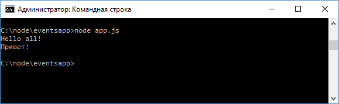

События
Подавляющее большинство функционала Node.js применяет асинхронную событийную архитектуру, которая использует специальные объекты - эмиттеры для генерации различных событий, которые обрабатываются специальными функциями - обработчиками или слушателями событий. Все объекты, которые генерируют события, представляют экземпляры класса EventEmitter. С помощью функции eventEmitter.on() к определенному событию по имени цепляется функция обработчика. Причем для одного события можно указать множество обработчиков. Когда объект EventEmitter генерирует событие, происходит выполнение всех этих обработчиков. Рассмотрим применение объекта EventEmitter и событий. Для этого определим следующий файл app.js:
const
Emitter = require("events");
let emitter = new Emitter();
let eventName
= "greet";
emitter.on(eventName, function(){
console.log("Hello all!");
});
emitter.on(eventName, function(){
console.log("Привет!");
});
emitter.emit(eventName);
Весь необходимый функционал сосредоточен в модуле events, который необходимо подключить. С помощью функции on() связываем событие, которое передается в качестве первого параметра, с некоторой функцией, которая передается в качестве второго параметра. В данном случае событие называется "greet". Для генерации события и вызова связанных с ним обработчиков выполняется функция emitter.emit(), в которое передается название события. И при запуске приложения будут вызваны все обработчики:

Передача параметров событию
При вызове события в качестве второго параметра в функцию emit можно передавать некоторый объект, который передается в функцию обработчика события:
const
Emitter = require("events");
let emitter = new Emitter();
let eventName
= "greet";
emitter.on(eventName, function(data){
console.log(data);
});
emitter.emit(eventName, "Привет пир!");
Назад: Ассинхронность в NodeJS стр3. | Далее: События стр.2